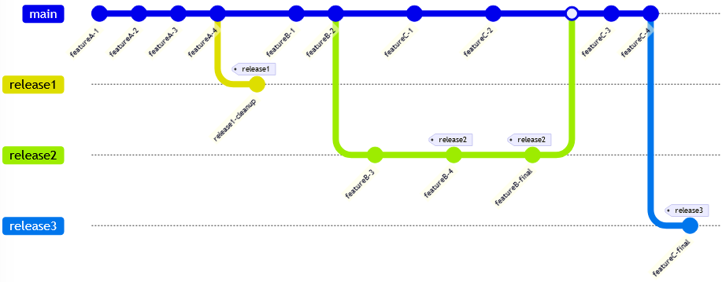
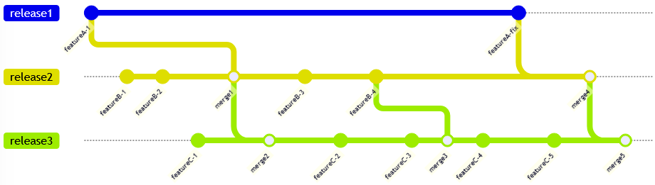
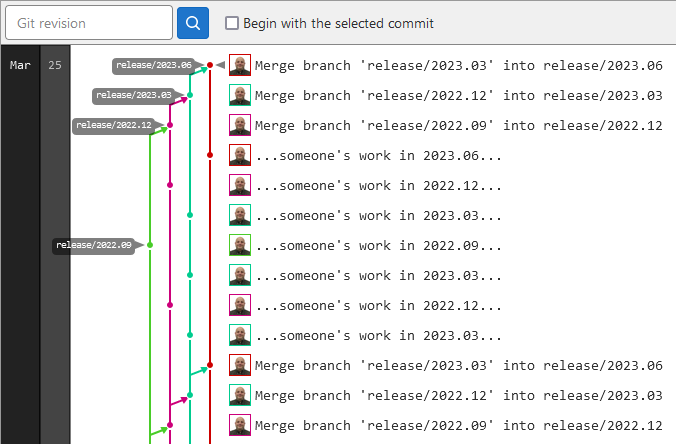

Release Branches
My name is Chris Papademetrious and I work for Synopsys Inc., a semicoductor design automation software company. I am an occasional guest contributor to the Oxygen XML blog, and I wanted to share how we use Git.
Our team writes documentation for many different products. And for the most part, all products follow a common software and documentation release schedule (every three months). Our technical writers are knowledgeable on the products they write for, but they tend to be novices with Git.
Our Attempt at the Centralized Workflow
When we first adopted DITA and Git, we used the centralized workflow. However, we ran into issues when a particular product group needed to delay their release schedule. When the rest of the group began working on the next release in the main branch, the delayed group could not stay in the main branch because then "last-release" and "next-release" content would get mixed and there was no single point where the main branch represented the final release state. And so in these cases, we had to fork a release branch off the main branch and move the delayed product writers there. (And sometimes writers would keep working in the main branch out of inertia, and so the main branch content would get mixed up anyway...)

We considered using the feature branch workflow. However, this would require writers to be responsible for branch actions (forking feature branches and submitting pull requests), which they had never done before. Many products have multiple writers, which would require those feature branches to be synchronized on the server for collaboration. Some products have 40+ features in a release cycle, and our past experiences told us that writers could sometimes forget to switch branches. And so we decided not to use this workflow.
We needed a workflow in which a writer could simply continue to write for a release and not worry about switching branches until the release was done—regardless of whether their product finished its release early or late. So, we moved to a release branch workflow.
The Release Branch Workflow
In our release branch workflow, we create a branch for each release, named by the scheduled release date. A writer can work in a release branch as long as they like, and they can move to the next release branch whenever they are ready. If a feature requires collaboration by multiple writers, they can collaborate in that release branch.
The key feature of our release branch workflow is the cascaded release merge. Each week, we merge new commit activity forward from earlier release branches to later release branches. If a branch has no new commit activity since the last merge, no merge is performed from it.

In the preceding diagram, the release1 branch is completed and quiet. Product writers are finishing work in the release2 branch and moving to the release3 branch. Their work in the release2 branch is automatically propagated to release3. At some point, a product team finds that a retroactive documentation fix is needed for a feature in the release1 branch. This fix is automatically propagated forward into the release2 and release3 branches.
In this workflow, the writer must remember only to check out the next release branch after they complete their current release. And this is a notable enough accomplishment that they tend to remember to do this.
However, writers can work in multiple release branches if they want to. Most products have major releases on every third release interval. In this case, writers can make minor typo fixes and rewordings in the next minor release branch, but get an early start on feature documentation in the next major release branch. (Although in this case, the writers must be diligent again about remembering to switch branches!)
For the most part, writers don't need to worry about the logistics of the release merges. However, there are some cases in which they do need to be aware of them. For example,
- If a writer writes content for one release and wants to incrementally modify that content for the next release, they must wait for the merge to propagate the work forward to the next branch to be able to continue work on it.
- If a writer wants to add content that should not propagate forward to subsequent releases (such as a temporary bug or limitation that is fixed in the next release), then they add content to the earlier release, wait for a merge, then remove it in the next release.
In these cases, the writers can ask me to run a merge manually so they do not have to wait.
The Branch-Merging Perl Script
The release branch merge is performed by a perl script called merge_repo.pl. The usage is as follows:
$ merge_repo.pl --help
Usage:
--dry-run
Do not actually commit any changes
--starting-at branch_name
Start merging at this branching (merging from previous branch)
The script uses the command-line git client to perform its work. One
notable requirement is that the script needs a local repository to perform its
merging work in. The script automatically fetches and pulls all remote updates,
creating new local branches and deleting local branches that no longer have matching
remote branches as needed.
The script obtains the chronological list of release branches by querying and sorting
all branches that match release/* - there is no need to update any
branch list text files or databases as new release branches are created.
Here is an example of its output:
$ merge_repo.pl Checking for commits to merge from 'release/2022.09' to 'release/2022.12'... Merging 1 commits from 'release/2022.09' to 'release/2022.12'... Pushing merge to 'release/2022.12' upstream... Merge from 'release/2022.09' to 'release/2022.12' succeeded. Checking for commits to merge from 'release/2022.12' to 'release/2023.03'... Merging 4 commits from 'release/2022.12' to 'release/2023.03'... Pushing merge to 'release/2023.03' upstream... Merge from 'release/2022.12' to 'release/2023.03' succeeded. Checking for commits to merge from 'release/2023.03' to 'release/2023.06'... Merging 8 commits from 'release/2023.03' to 'release/2023.06'... Pushing merge to 'release/2023.06' upstream... Merge from 'release/2023.03' to 'release/2023.06' succeeded.
Here is the resulting commit graph as shown on the Gitlab server web page, from the previous merge to the just-completed merge:

As mentioned earlier, no matter how many "earlier" branches exist, no forward merge is performed from a branch unless it contains new activity since the last merge.
If a release merge result cannot be pushed (perhaps because a writer just pushed something new to the server), the script abort its current merge, updates its local repository, and retries the merge.
If the script encounters a merge conflict, it prints information to STDERR about how to manually reproduce and resolve the conflict, then continue the merge:
$ merge_repo.pl Checking for commits to merge from 'release/2022.09' to 'release/2022.12'... Merging 1 commits from 'release/2022.09' to 'release/2022.12'... Pushing merge to 'release/2022.12' upstream... Merge from 'release/2022.09' to 'release/2022.12' succeeded. Checking for commits to merge from 'release/2022.12' to 'release/2023.03'... Merging 4 commits from 'release/2022.12' to 'release/2023.03'... Merge from 'release/2022.12' to 'release/2023.03' failed: Auto-merging some_topic.dita CONFLICT (content): Merge conflict in some_topic.dita Automatic merge failed; fix conflicts and then commit the result. some_topic.dita:21: leftover conflict marker some_topic.dita:24: leftover conflict marker some_topic.dita:25: leftover conflict marker some_topic.dita:27: leftover conflict marker Perform the following commands manually: git checkout release/2023.03 git merge release/2022.12 ...resolve conflict... git push merge_repo.pl --starting-at release/2023.06
The script runs every Wednesday as a cron job. For conflicts or other errors (like server downtime), the resulting output to STDERR causes cron to email the command output to the script owner (in this case, me). Thanks to this behavior of cron, the script operates quietly unless attention is needed.